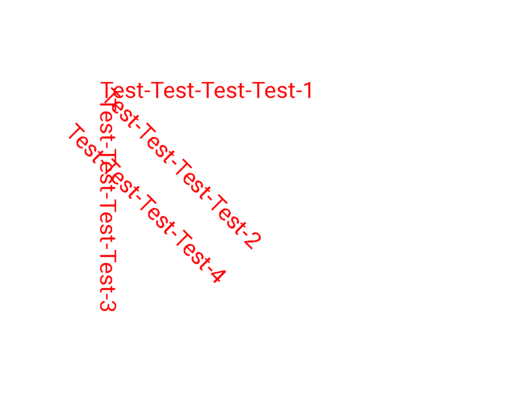
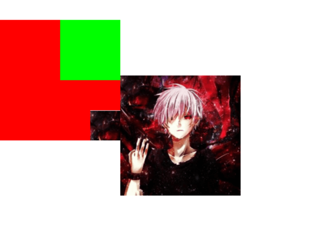

Canvas & Layer Canvas的官方注释: To draw something, you need 4 basic components: A Bitmap to hold the pixels, a Canvas to host the draw calls (writing into the bitmap), a drawing primitive (e.g. Rect, Path, text, Bitmap), and a paint (to describe the colors and styles for the drawing).
即当需要draw的时候，需要4个基本的组件：
一个Bitmap来存储像素
一个Canvas来接收draw的调用(draw的结果是将像素画到前面的Bitmap中)
一个源，即想画的东西(比如矩形，路径，文本，或位图)
一个画笔(描述想画的颜色和风格等)
所以最终这些元素都会被画到一个bitmap上，然后再渲染到屏幕上。
可以使用 save() 方法保存当前 Canvas 的状态到一个私有栈中(Saves the current matrix and clip onto a private stack)，当调用 restore() 方法的时候，会恢复之前 Canvas 的状态(通过栈的压入和弹出)。可以 save() 多次，也可以 restore() 多次，但是 restore() 的调用次数不能大于 save() 否则会引发异常。
Canvas 提供了图层(Layer)的支持，Layer(图层)是按栈结构来进行管理的。save 方法保存的并不是一个新的图层，只是画布的状态(类似还原点)，saveLayer() 方法才会开启一个新的图层，所以相对于save方法而言，saveLayer() 方法更耗性能。
缺省情况可以看作是只有一个图层Layer，如果需要按层次来绘图，可以使用 Canvas 的 saveLayer(saveLayerAlpha)创建新的图层，然后入栈。saveLayer() 会生成一个offscreen bitmap，它可以保存特定的区域，之后的所有操作都是在这个新的offscreen bitmap上，直到调用 restore(restoreToCount) 函数将图层弹出栈，出栈时会把本层绘制的图像绘制到上层或是Canvas上。
示例一：
1 2 3 4 5 6 7 8 9 10 11 12 13 14 15 16 17 18 19 20 21 22 23 24 25 26 27 28 29 30 31 32 33 34 35 36 37 38 39 class CustomView(context: Context, attrs: AttributeSet?, defStyleAttr: Int) : View(context, attrs, defStyleAttr) { private var mPaint = Paint() constructor(context: Context) : this (context, null ) constructor(context: Context, attrs: AttributeSet?) : this (context, attrs, 0 ) init { mPaint.color = Color.RED mPaint.textSize = 45f } override fun onDraw (canvas: Canvas?) { super .onDraw(canvas) Log.d("LLL" , "layer count = ${canvas?.saveCount}" ) canvas?.save() canvas?.translate(200f , 200f ) canvas?.drawText("Test-Test-Test-Test-1" , 0f , 0f , mPaint) canvas?.save() canvas?.rotate(45f ) canvas?.drawText("Test-Test-Test-Test-2" , 0f , 0f , mPaint) canvas?.save() canvas?.rotate(45f ) canvas?.drawText("Test-Test-Test-Test-3" , 0f , 0f , mPaint) canvas?.save() canvas?.restore() canvas?.restore() canvas?.translate(0f , 100f ) canvas?.drawText("Test-Test-Test-Test-4" , 0f , 0f , mPaint) Log.d("LLL" , "layer count = ${canvas?.saveCount}" ) } }
效果图：

示例二：
1 2 3 4 5 6 7 8 9 10 11 12 13 14 15 16 17 18 19 20 21 22 23 24 25 26 class CustomView(context: Context, attrs: AttributeSet?, defStyleAttr: Int) : View(context, attrs, defStyleAttr) { private var mPaint = Paint() private var mBitmap = Bitmap.createScaledBitmap( BitmapFactory.decodeResource(resources, R.drawable.head), 400 , 400 , true ) constructor(context: Context) : this (context, null ) constructor(context: Context, attrs: AttributeSet?) : this (context, attrs, 0 ) override fun onDraw (canvas: Canvas?) { super .onDraw(canvas) canvas?.saveLayer(0f , 0f , 400f , 400f , mPaint) canvas?.drawColor(Color.RED) canvas?.drawBitmap(mBitmap, 300f , 300f , mPaint) canvas?.saveLayer(200f , 0f , 800f , 200f , mPaint) canvas?.drawColor(Color.GREEN) canvas?.restoreToCount(1 ) canvas?.drawBitmap(mBitmap, 400f , 400f , mPaint) } }
效果图：

自定义View 分类
继承 View 重写 onDraw, onLayout, onMeasure 等方法: 需要自己支持 wrap_content, 且需要处理 padding。
继承 ViewGroup 派生 Layout: 如 LinearLayout 等，需要处理 ViewGroup 及其子 View 的 measure 和 leyout 过程，可能还需要处理事件分发与滑动冲突等场景。
继承特定的 View: 不需要自己支持 wrap_content 和 padding。
继承特定的 ViewGroup: 不需要自己处理 ViewGroup 的 measure 和 leyout。
与View绘制过程measure，layout，draw相关可见Android-View绘制原理 。
自定义属性文件 在res/values目录下新建一个attrs.xml文件：
1 2 3 4 5 6 7 8 9 10 11 12 13 14 15 16 17 <?xml version="1.0" encoding="utf-8"?> <resources > <declare-styleable name ="CustomView" > <attr name ="color" format ="color" /> <attr name ="font" format ="dimension" /> <attr name ="text" format ="string" /> <attr name ="type" format ="enum" > <enum name ="common" value ="1" /> <enum name ="material" value ="2" /> </attr > <attr name ="flag" format ="flags" > <flag name ="flag1" value ="0x01" /> <flag name ="flag2" value ="0x02" /> <flag name ="flag4" value ="0x04" /> </attr > </declare-styleable > </resources >
format的取值如下所示：
boolean: true 或者 false
color: 颜色类型，如#ff3344或如R.color.colorAccent
dimension: 尺寸类型，如取值16sp, 16dp, 或R.dimen.dp_16等
float: 整形或者浮点型
fraction: 百分数类型，只能以%结尾，如30%
integer: 整型
string: String类型或一个指向String的资源id
reference: 指向资源的id
enum: 枚举类型，通常隐式定义
flag: flag类型，通常隐式定义
可以使用|将format设置为多个类型，例: format="reference|dimension"。
实例 属性文件：
1 2 3 4 5 6 7 8 9 10 <?xml version="1.0" encoding="utf-8"?> <resources > <declare-styleable name ="CountDownView" > <attr name ="circleColor" format ="color" /> <attr name ="radiusCircle" format ="dimension" /> <attr name ="textColor" format ="color" /> <attr name ="textSize" format ="dimension" /> <attr name ="count" format ="integer" /> </declare-styleable > </resources >
倒计时控件：
1 2 3 4 5 6 7 8 9 10 11 12 13 14 15 16 17 18 19 20 21 22 23 24 25 26 27 28 29 30 31 32 33 34 35 36 37 38 39 40 41 42 43 44 45 46 47 48 49 50 51 52 53 54 55 56 57 58 59 60 61 62 63 64 65 66 67 68 69 70 71 72 73 74 75 76 77 78 79 80 81 82 83 84 85 86 87 88 89 90 91 92 93 class CountDownView(context: Context, attrs: AttributeSet?, defStyleAttr: Int) : View(context, attrs, defStyleAttr) { private val mCirclePaint = Paint(Paint.ANTI_ALIAS_FLAG) private val mTextPaint = Paint(Paint.ANTI_ALIAS_FLAG) private var mCircleColor = 0 private var mRadius = 0 private var mTextColor = 0 private var mTextSize = 0 private var mCount = 0 private var mCurrentCount = 0 private var mValueAnimator: ValueAnimator? = null private var mOnCountListener: OnCountListener? = null constructor(context: Context) : this (context, null ) constructor(context: Context, attrs: AttributeSet?) : this (context, attrs, 0 ) init { val ta = context.obtainStyledAttributes(attrs, R.styleable.CountDownView) mCircleColor = ta.getColor(R.styleable.CountDownView_circleColor, Color.WHITE) mRadius = ta.getDimensionPixelSize(R.styleable.CountDownView_radiusCircle, 12 ) mTextColor = ta.getColor(R.styleable.CountDownView_textColor, Color.BLACK) mTextSize = ta.getDimensionPixelSize(R.styleable.CountDownView_textSize, 16 ) mCount = ta.getInt(R.styleable.CountDownView_count, 3 ) ta.recycle() mCurrentCount = mCount mCirclePaint.color = mCircleColor mCirclePaint.style = Paint.Style.FILL mTextPaint.color = mTextColor mTextPaint.textSize = mTextSize.toFloat() mTextPaint.isAntiAlias = true mTextPaint.textAlign = Paint.Align.CENTER } fun setListener (onCountListener: OnCountListener) { mOnCountListener = onCountListener } fun start (count: Int) { mCount = count start() } fun start () { if (mValueAnimator == null ) { mValueAnimator = ValueAnimator.ofInt(mCount, 0 ) mValueAnimator?.duration = mCount * 1000L mValueAnimator?.interpolator = LinearInterpolator() mValueAnimator?.repeatCount = 0 mValueAnimator?.addUpdateListener { val count = it.animatedValue if (count is Int) { mCurrentCount = count invalidate() if (count == 0 ) { mOnCountListener?.onFinish() } } } } mValueAnimator?.cancel() mValueAnimator?.start() } override fun onMeasure (widthMeasureSpec: Int, heightMeasureSpec: Int) { super .onMeasure(MeasureSpec.makeMeasureSpec(mRadius * 2 + paddingStart + paddingEnd, MeasureSpec.EXACTLY), MeasureSpec.makeMeasureSpec(mRadius * 2 + paddingTop + paddingBottom, MeasureSpec.EXACTLY)) } override fun onDraw (canvas: Canvas?) { super .onDraw(canvas) val radius: Float = mRadius.toFloat() val padding = (measuredWidth - radius * 2 ) / 2 canvas?.drawCircle(padding + radius, padding + radius, radius, mCirclePaint) val fontMetrics = mTextPaint.fontMetricsInt canvas?.drawText("$mCurrentCount" , radius + padding, radius + padding - (fontMetrics.bottom + fontMetrics.top) / 2 , mTextPaint) } interface OnCountListener fun onFinish () } }
使用布局：
1 2 3 4 5 6 7 8 9 <com.hearing.componentdemo.CountDownView android:id ="@+id/count_view" android:layout_width ="wrap_content" android:layout_height ="wrap_content" app:circleColor ="@color/colorAccent" app:count ="3" app:radiusCircle ="20dp" app:textColor ="@color/colorPrimary" app:textSize ="20sp" />
圆角ImageView Android 原生的 Button, TextView 可以通过自定义 shape 实现圆形或圆角形状，但是 ImageView 不可以，可以通过以下方式实现：
Canvas.clipPath(path): 该方法只留下 path 内的画布区域，需要在 draw 之前调用。当传入一个带圆角的矩形 Path 时绘制的图片自然而然就变成了圆角图片。但是该方法会有锯齿，有一些解决锯齿的方法，但可能受到硬件加速的影响而失效。
Xfermode: 该方法可定义高，支持多图层的圆角，但是很麻烦。使用Xfermode通常来说会绘制两层，第一层称为 Dst 图层，第二层称为 Src 图层，然后根据 Xfermode 去计算两个图层的关系。
BitmapShader: 推荐使用，使用简单，但不支持 LayerDrawable 这种复杂的定义。
BitmapShader 是 Shader 的子类，可以通过 Paint.setShader(Shader shader) 进行设置，其构造函数：
1 public BitmapShader (@NonNull Bitmap bitmap, TileMode tileX, TileMode tileY)
其中 bitmap 指的是要作为纹理的图片，tileX 和 tileY 分别指的是在 ｘ 和 y 方向上纹理的绘制模式，取值如下：
CLAMP: 拉伸，横向拉伸最后一个横行像素，纵向拉伸最后一个纵列像素；
REPEAT: 重复，横向、纵向不断重复Bitmap；
MIRROR: 镜像，横向、纵向不断翻转重复Bitmap。
可以通过 BitmapShader 自定义圆形，圆角，多边形等形状的 View:
1 2 3 4 5 6 7 8 9 10 11 12 13 14 15 16 17 18 19 20 21 22 23 24 25 26 27 28 29 30 31 32 33 34 35 36 37 38 39 40 41 42 43 public class ShaderView extends AppCompatImageView private Paint mPaint; private RectF mBmpRect; private Matrix mMatrix; public ShaderView (Context context) this (context, null ); } public ShaderView (Context context, @Nullable AttributeSet attrs) this (context, attrs, 0 ); } public ShaderView (Context context, @Nullable AttributeSet attrs, int defStyleAttr) super (context, attrs, defStyleAttr); init(); } private void init () mPaint = new Paint(Paint.ANTI_ALIAS_FLAG); mMatrix = new Matrix(); } @Override protected void onSizeChanged (int w, int h, int oldw, int oldh) super .onSizeChanged(w, h, oldw, oldh); mBmpRect = new RectF(0 , 0 , w, h); } @Override protected void onDraw (Canvas canvas) Bitmap bitmap = Utils.drawable2Bitmap(getDrawable()); BitmapShader bitmapShader = new BitmapShader(bitmap, Shader.TileMode.CLAMP, Shader.TileMode.CLAMP); float scale = Math.max(getWidth() * 1.0f / bitmap.getWidth(), getHeight() * 1.0f / bitmap.getHeight()); mMatrix.reset(); mMatrix.setScale(scale, scale); bitmapShader.setLocalMatrix(mMatrix); mPaint.setShader(bitmapShader); int borderRadius = 30 ; canvas.drawRoundRect(mBmpRect, borderRadius, borderRadius, mPaint); } }